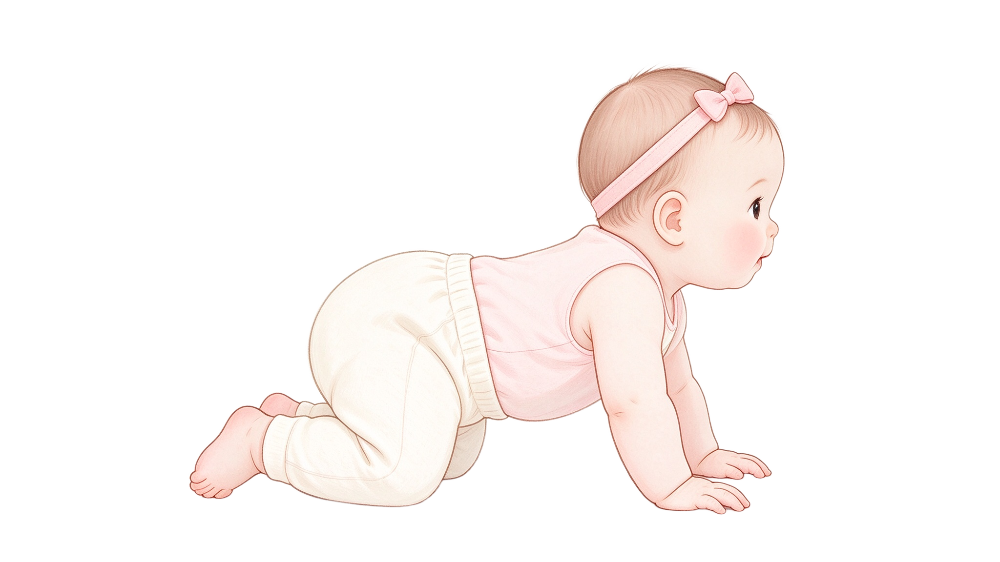

🌸 小石榴待产清单
输入密码后可编辑和同步进度
解锁
密码错误，请重试
只读模式 · 可查看不可编辑
🌸 小石榴待产清单
预产期 2027年3月22日 · 头胎 · 本文件保存在本地，断网可用
--
当前孕周
--
距预产期（天）
0%
清单完成度

已完成 0 / 0 项
🏥 生产医院 · 潍坊市中医院（高新/东院区）
地址：
高新区宝通东街11166号
电话：
0536-8590501 / 8885120
等级：
三甲公立中医医院
产科：
山东省重点学科
无痛分娩：
有（椎管内镇痛）
陪产：
家庭化陪伴分娩
医保报销参考（潍坊）：
· 职工医保：住院分娩政策范围内报销90%，产前检查定额800元
· 居民医保（一孩）：住院分娩定额补贴1000元
· 建议建档时确认医保备案流程，保留所有缴费单据
月子方式：
自家请月嫂（需提前3-6个月预定）
🐱 家里猫咪 · 孕期&产后管理
已做：
你自己处理猫砂盆
原则：
猫不出门、喂猫粮/熟食
⚠️ 你自己清理猫砂时：
必须戴一次性手套，事后用肥皂+流水认真洗手；猫砂
每天铲
（弓形虫卵囊需24-48小时才具感染性）；清理时不要揉眼睛、摸嘴。条件允许最好让家人代劳。
猫咪待办（点方框打勾）：
带猫做弓形虫检测（IgM/IgG）
确认猫三联疫苗有效，过期补打
确认狂犬疫苗已接种
定期体内外驱虫（月外驱/3月内驱）
停喂生肉，改猫粮/熟食
产检加查TORCH（弓形虫IgM/IgG）
产后：宝宝房关门，猫不单独进
孕12周 建档
孕17+4 当前
孕24周 大排畸
孕32周 小排畸
孕37周 足月
产后42天
展开全部
收起全部
备份数据
恢复备份
重置